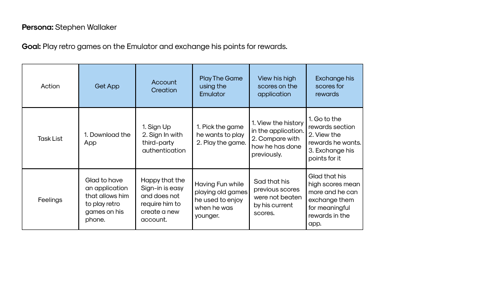

Arcad.Io - Arcade Application Design
This is a mobile application concept for an Arcade based in Philadelphia. The users will be able to keep track of their scores when they visit the arcade, play retro games on a free emulator within the application and also exchange their high score points for rewards.
Defining the Users of the Application and it's Scope
The scope of this application is quite narrow. One category of users would be the ones who download the application to keep track of their high scores in the arcade but this is going to be the minority of the users because not many people visit arcade nowadays and even fewer would visit this specific arcade in Philadelphia. The majority of the users would download the application to use its emulator functionality which allows them to play retro games on their mobile phones without having to worry about installing ROMs.
Meet the users of Arcade Application
Based on the previous section, I have illustrated 2 prospective user personas for Arcade Application, one for each use case I mentioned in the previous section.

Illustrating the User Journey of Malcolm Pearson
To get a better understanding about how the users would traverse through the application, I have created a user journey of how Malcolm Pearson would navigate through the application and accomplish his goal of keeping track of his high scores when he visits the arcade.

Important Details to keep in mind before designing the Wireframes
Creating a Hypothesis Statement based on the User Persona of Stephen Wallaker
If Stephen downloads the application, he will achieved his aim of finding a reliable way to play retro games on his mobile phone during his free time which is his primary goal for installing the application. Additionally, he would not have to worry about installing Emulators and ROMs on his mobile phone which is too complex of a task for him. We believe that this easy access to emulators will make him happier when he uses the application and will make him want to use it more often. (Albeit in a controlled amount, playing too much is not a good thing.)
User Storyboards
Before I create the wireframes of the application, I have created a storyboard to visualise how Stephen would navigate the application in order to play a game using the emulator functionality present in the application. I created this storyboard to visualise the organisation of screens in the wireframing phase.
Wireframes
I have created a low-fidelity prototype for the application. For this Low-Fidelity Prototype, I focused more on the layout of the information on the screens rather than a specific user journey. This is because the user journey for the score tracking part of the application is entirely dependent on them playing the arcade while the emulator functionality is just 2 clicks.
I did stumble across an issue when designing the history page of the application which tracks the scores they got when playing at the arcade, sorted by date and time. For this screen, I had two different layout ideas of which I have posted pictures of below.

In my opinion, Layout 1 is easier for the users to understand since users are used to seeing the history page arranged similarly (Such as the Search History in Google Chrome). If I do follow the Design Heuristic which specifies that the designers should go for recognition over recall, I would choose Layout 1.